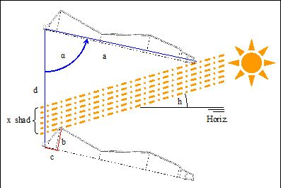
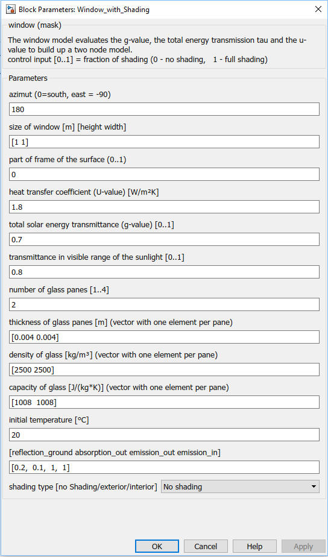

Window
Path: CARNOT/Basic/Thermal_Models
Purpose
Window model for
detailed room model.
Thermal Model
The window model is
based on a thermal 2 node model. The nodes represent the surface of the window
towards the room and the outside ambient.
Equations:
Thermal capacity of the window per surface: C = sum ( density * heat_capacity * thickness of the pane(s) )
Rhermal resistance: Rtotal = Rout + Rwin + Rin
Typically Rtotal (under ISO standard conditions) is given by
the manufacturer of the window.
ISO standard sets:
Rout = 1/25 m²*K/W (heat transfer = 25 W/m/K)
Rin = 1/8 m²*K/W (heat transfer = 8 W/m/K)
The heat transfer is divided in radiative and convective transfer. The power per surface qdot towards the room is calculated by the block "alfa_window_in", Transfer to the ambient is calculated by the block "alfa_window_out".
Timeconstant of the node (transfer function): Tau = 1/2 * Rwin * C
Node temperature: C/2 * dTnode/dt = qdot + Rwin(TneighbourNode - Tnode)
Solar Transmittance

Figure:normalized transmittance of glass as a function
of incidence angle T (with a = 0° if
vertical on window)
The transmittance for diffuse irradiation is td = ab(T=60°). This allows calculation of solar gain into the room
behind the glass pane :
dqsol/dt = tb (T)*IT,b + td*IT,b[W/2]
Incoming solar radiation is exclusively absorbed by the floor and converted into heat at the floor surface. All other structural components of the room communicate with this solar heated surface via the radiative and convective node.
Solar radiation absorbed by the window results in heating of the pane(s), which can be calculated with
dqabs/dt = g*tb (T)*(1/tb (t=0) - 1)*IT,b + (g - td)*IT,b[W/2]
For simplification an equal distribution across all panes of the window is assumed.
Shading
Four options can be choosen for the shading:
1) no shading
2) external blinds
New transmission coefficients for direct and diffuse solar
radiation
Tau = shading_control *
(1-shading_transmission)
3) internal blinds
Full transmission of solar radiation
Reduction of energy transmission factor g_new =
shading_control * (1-g)
Reduction of transmission of visible light f =
shading_control * (1-shading_transmission)
4) venetian blinds
Calculation of the transmisson coefficients for direct and
diffuse solar radiation from the geometry of the blinds.

The shading control signal varies the shading continously
between
0 - no shading
up to
1 - full shading
Parameters and Dialog Box

Literature
Loutzenhiser, Peter; Manz, Heinrich: Empirical Validations of Shading/Daylighting/Load Interactions in Building Energy Simulation Tools, A Report for the International Energy Agency’s SHC Task 34/ ECBCS Annex 43 Project C, August 2007
Characteristics
Direct Feedthrough Yes
Sample
time
Inherited
from driving block
States
corresponding
to the number of nodes
Vectorized
No